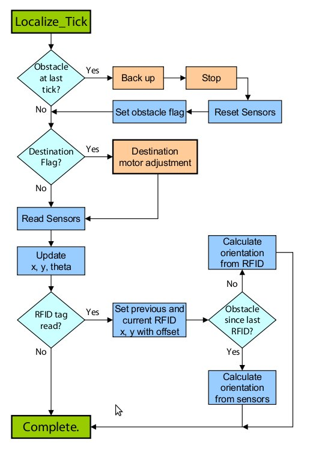
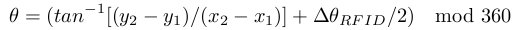
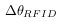
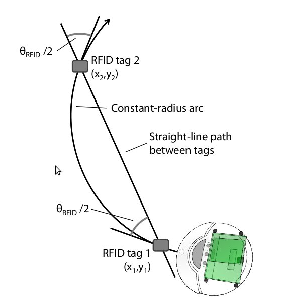

|
Mint-2 Localization
The iRobot Create has two built-in sensors to track the
robot's movement. These sensors can be queried via the serial
interface, and return both distance traveled by the robot since
the last query (in mm) and angle the robot has rotated through
since the last query (in degrees). However, the accumulated
sensor measurements may grow inaccurate due to rounding
errors, wheel slippage, and encoder inaccuracy, over time.
In addition, a node may be manually picked up and moved
to a new location. Thus, we used an RFID based system to
periodically re-calibrate the node's position and orientation in
the testbed space.
An array of fixed RFID tags deployed on the floor of the
testbed allows each robot to determine its absolute location
with an uncertainty equal to the maximum tag-sensing radius
of the RFID reader (2.25cm). When a robot crosses an RFID
tag, the tag value is used to determine the node's absolute
(x, y) position within the testbed.
The heart of the localization algorithm is a section of code
running periodically every 50ms that is in charge of acquisition
and processing of data from movement sensors and the RFID
reader. The following presents a more structured view of the
localization algorithm.

Every time the localization tick runs,
it reads the delta change in distance and orientation since the
last sensor access, adds the changes to the last known position
and orientation respectively, and clears the sensors. In addition,
more precise position and orientation calibration is performed
when passing over RFID tags to remove accumulated error
from the Create’s sensors feedback. Once at least two tags
have been read, the node can determine its orientation from
the coordinates of each tag (say (x1, y1) and (x2, y2)) as:

If the node travels in a straight line, then  is 0.
However, if it traveled in a constant-radius arc, its deviation
from the straight line path between the two tags is equal in
magnitude at both the tags. Thus the effective change in angle,
/2 is added to the net angle.
The following image elaborates more
the robot's orientation calculation for the constant-radius arc
movement.

In order to account for the situations, where researchers
or testbed operators manually drop the robot anywhere in
the testbed area, the robots are programmed to initialize
themselves with correct coordinates and orientation informa-
tion. The position initialization process is only considered
successful if the node reads two RFID tags over a straight
line movement.
|